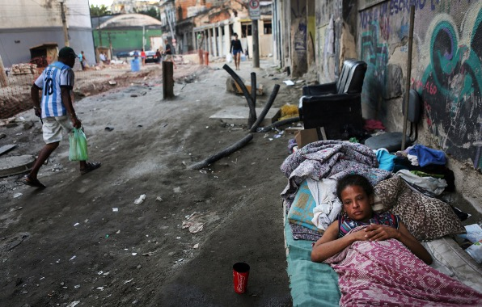
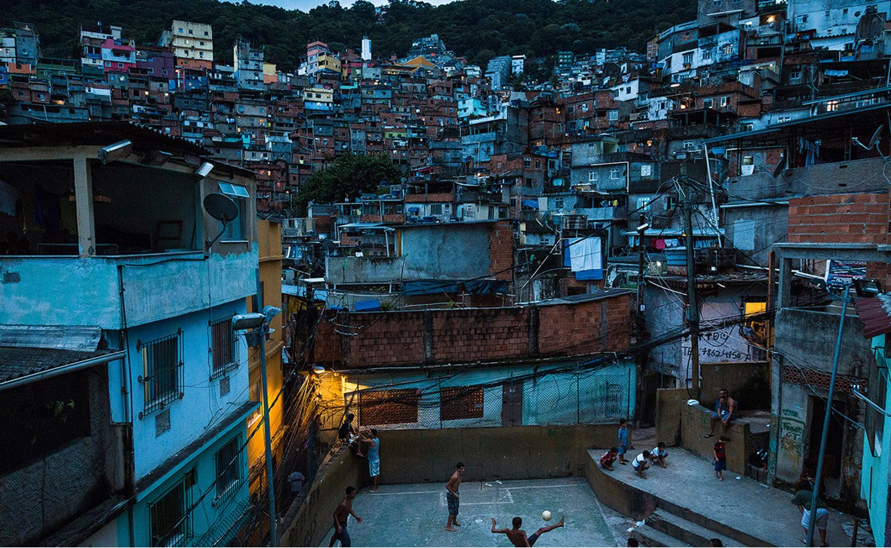
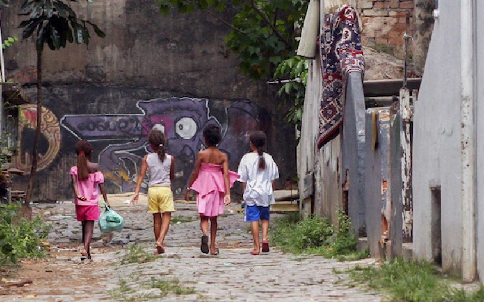

Brazil's economy has had its ups and downs throughout their history, evidenced by the cycle of booms and
busts. Their failures mostly come from inadequate government management which has resulted in high rates of
inflation. This has been mostly due to the governments policies of deficit spending and corrupt practices
that ignored certain restricions and fiscal reforms. Although economic conditions are difficult for many
citizens, Brazil still has a lot of potential. The country has many resources to offer the country with them
being one of the world leaders of mining, manufacturing, and agriculture. Additionally, the world's primary
source of coffee, oranges, sugar, soy, and beef come from Brazil.
In recent years, Brazil's economy and its citizens have faced economic challenges resulting from the
COVID-19 pandemic. Shutdowns affected supply chain operations which limited exports and pandemic-related
fiscal spending weakened the countrys economic position. These economic impacts have affected social issues
as well creating an increase in food insecurity and deaths caused by the pandemic. Brazillians that have
been affected the most are located in the more rural areas that include the poorest regions of the country.
Since economic disparity is so prevelant in many parts of Brazil, the country has put into action policies
to adress access to food, energy, and employment.
Continue reading more below to find out how the country is working towards addressing economic issues
pertaining to the U.N. goals for eliminating poverty, providing affordable and clean energy, and improving
work and economic growth.

Brazil has a significant poverty rate with a large percentage of the population living below the
national poverty line. Poverty rates in Brazil have expanded and contracted along with the
governments cash transfer programs such as the Bolsa Familia program. The latest report from the
World Bank provides the poverty rate percentage jumped up to 28.4% following a reduction in the
program caused by the economic downtown faced during the pandemic. Households income have yet to
improve either, driven by scarce job opportunies among vulnerable groupsm reduction to
government offerings, and a rise in inflation casuing a decline in households purchasing power.
On the other end of the spectrum, high-income earners under the wealthiest 10% of the population
account for more than 40% of the country's total income; while the poorest 10% make up less than
1% of total income. This makes Brazil one of the most unequal countries as far as income is
distributed. Further investments in infrastructure may help to combat unemployment in poorer
regions, but the government must be careful about what they spend so they do not run into
economic deficit problems again.
In order to address the income disparity gap, the Brazillian government has implemented several
policies and measures that aim at increasing resources to those living in poverty. Some of these
measures include the Bolsa Familia program, raising minumum wage across the country, increasing
access to eduaction in rural areas and indigenous groups, and creating progressive tax policies.
These policies and measures are steps in the right direction, however progress has been slow as
it takes significant changes to many areas that affect the economy.
Brazil has been
working to increase renewable energy sources in the country with investments in wind, solar, and
hydropower. Currently a majority of energy production is coming from hydropower which has its
benefits and weaknesses. Relying on hydropower as a major source of energy has disadvantages
since energy output is subject to fluctuations in rainfall. More importantly, this energy source
has show to have negative impacts on the environment.
It would be beneficial for the country to focus more renewable energy investmensts in a diverse
range of sources that are not subject to fluctiation in output. Additionally, creating more
renewable energy infrastructure will promote economic growth since it will create more jobs.
These projects would be most beneficial in rural areas that are largely affected by poverty.
The poor economic
conditions of the country have largely been affected by the minimal amount of education and job
opportunities available to the population. Many families living in poverty have to find
alternative methods to make money and support themselves resulting in child labor and a drop in
education rates. Promoting economic growth is a difficult challenge when the country is already
in a slump and disparity among groups keeps the gap widened.
Increasing job growth in the country has been a slow process as it requires additional
infrastrucutre to create these jobs. After getting hit hard by the pandemic and previous
economic conditions, the country is not in the best place to be making large investments. Brazil
is going to be mostly reliant on exports and the growth of supply chain as they make up a
significant percentage from these resources. As the country comes out of the pandemic, they may
see more growth in these areas and be able to make more progress towards addressing economic
opportunites in the country.